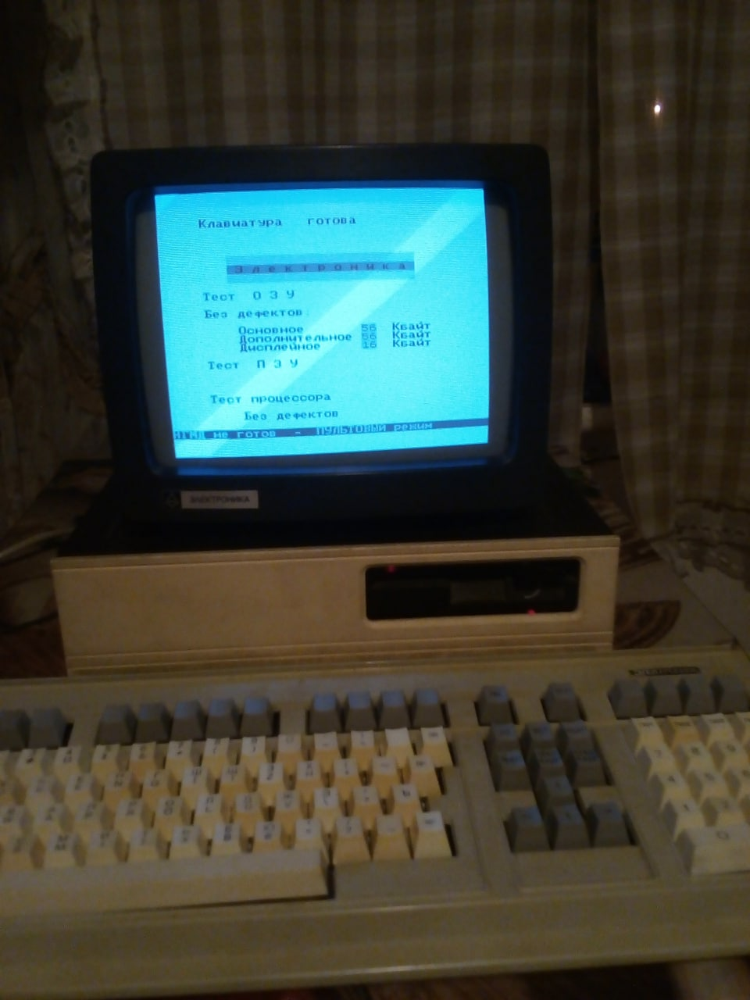

Основатель r0sa bio-digital, инициатор проектов knyt space, c0ntent dao, metalanguage.
Родился в городе Воронеж, СССР.
Начал путь программиста с изучения "Бейсик Омега" на Электроника МС 0515, затем перешёл на IBM-совместимую архитектуру.
Поступил в математический класс с совмещённым изучением стандартной школьной программы и университетского курса Математического Факультета.
Начал свой первый коммерческий проект на заказ - систему складского учёта и розничной торговли для аптеки.
Поступил в Воронежский Государтсвенный Университет на факультет Прикладной Математики и Механики, отделение Системное Программирование.
Занял первое место в университетской олимпиаде по программированию.
Внедрил информационную систему собственной разработки в реально работающую аптеку. Она представляла собой программно-аппаратный комплекс и курс обучения персонала.
Выпустил вторую версию информационной системы для аптеки. Были повышены производительность, надёжность, удобство использования с учётом полученного опыта реальной эксплуатации первой версии системы.
Внедрил обновлённую версию ещё в одну аптеку.
Устроился программистом в крупнейшую в Воронеже компанию-разработчик компьютерных игр. Отвечал за модули эмуляции физического взаимодействия в играх.
Сделал свой вклад в успешный международный релиз крупного ААА-проекта компании. Уникальные игровые механики, основанные на разработанном мной физическом модуле, получили положительные отзывы у критиков и экспертов.
Открыл свою студию по разработке мультимедиа-софта и перешёл в неё из крупной компании.
Выполнил разработку и обеспечил релиз по 4 собственным и 4 заказным мультимедиа проектам. Команда состояла из 7 человек. Уровень зарплат участников проекта был в 2-3 раза выше, чем в среднем по городу в то время.
Выполнил разработку и обеспечил релиз казуальной игры "Заколдованная Шляпа". Команда состояла из 3 человек. Игру выпустили на 5 языках ведущие мировые издатели казуальных игр того времени.
Закрыл собственную студию в провинции и устроился работать программистом в столице. Получил предложение о работе одновременно от nVidia и Vizerra, выбрал Vizerra за более дружественный коллектив и неформальную атмосферу.
Благодаря опыту и навыкам руководстиделя, полученным во время работы в собственной студии, смог занять должность руководителя отдела программистов на флагманском проекте компании "Виртуальный Сочи 2014" для Оргкомитета Олимпийских игр в Сочи.
Обеспечил успешный релиз проекта "Виртуальный Сочи 2014", уложившись точно в срок и бюджет проекта. По итогам релиза почти все участники команды получили бонусы.
Уволился из Vizerra. Обобщая полученный опыт работы над большим проектом, пришёл к пониманию перспектив развития технологии семантических сетей в современной софтверной разработке. Начал активное самостоятельное исследование данного направления. Можно сказать, что в октябре-ноябре этого года родилась организация r0sa bio-digital.
Устроился руководителем проекта в исследовательский стартап "Киноязык", связанный с крупной киностудией "Базелевс". Успешно завершил несколько проектов, свзязанных со старым подходом к реализации технологии, и предложил новый более продуктивный подход.
В течение года получил повышение от руководителя проекта до ведущего архитектора (аналог технического директора в структуре компании). Первый раз применил некоторые элементы семантических технологий на практике для проектирования и реализации инновационной технологии для киноиндустрии, видеоигр и цифровых развлечений.
Успешно завершил проект по исследованию перспектив технологии "Киноязык" в рамках "Базелевс Инноваций". Затем занялся R&D в области семантических технологий самостоятельно.
Устроился руководителем проекта в ирландский игровой стартап Rocks Pro. Довёл флагманский проект студии до успешного релиза.
Получил от руководства Rocks Pro первые инвестиции в разработку семантических технологий - проект organic web.
Из-за сложностей с продажей готовой семантической технологии договорились с Rocks Pro об остановке инвестиций в разработку.
Устроился в лондонскую компанию bioniq в качестве технического директора.
Закончил разработку и внедрение информационной системы, ставшей ядром обработки медицинских данных для всех клиентов компании. Система была специально спроектирована для последующего внедрения семантических технологий для автоматизации выскоквалифицированной и немасштабируемой работы медицинского директора.
Организовал покупку лицензии для bioniq на использование проприетарной системы organic web у правообладателей в лице Rocks Pro. Это сэкономило время и деньги на разработку компании bioniq, и обеспечило возврат инвестиций компании Rocks Pro.
Внедрил семантические технологии на базе organic web в бизнес-процесс компании, что позволило освободить медицинского директора от рутинной операционной деятельности и многократно ускорить медицинскую обработку клиентов, особенно сложных случаев.
Разработал и внедрил в бизнес-процессы bioniq семантическую систему knyte space собственной разработки на замену морально устаревшей к тому времени organic web. В результате медицинский директор смог делегировать существенную часть своей работы по настройке семантической сети своим подчинённым.
Уволился из bioniq и начал 2 собственных проекта на базе семантических технологий: коммерческий c0ntent DAO и некоммерческий Metalanguage Foundation.